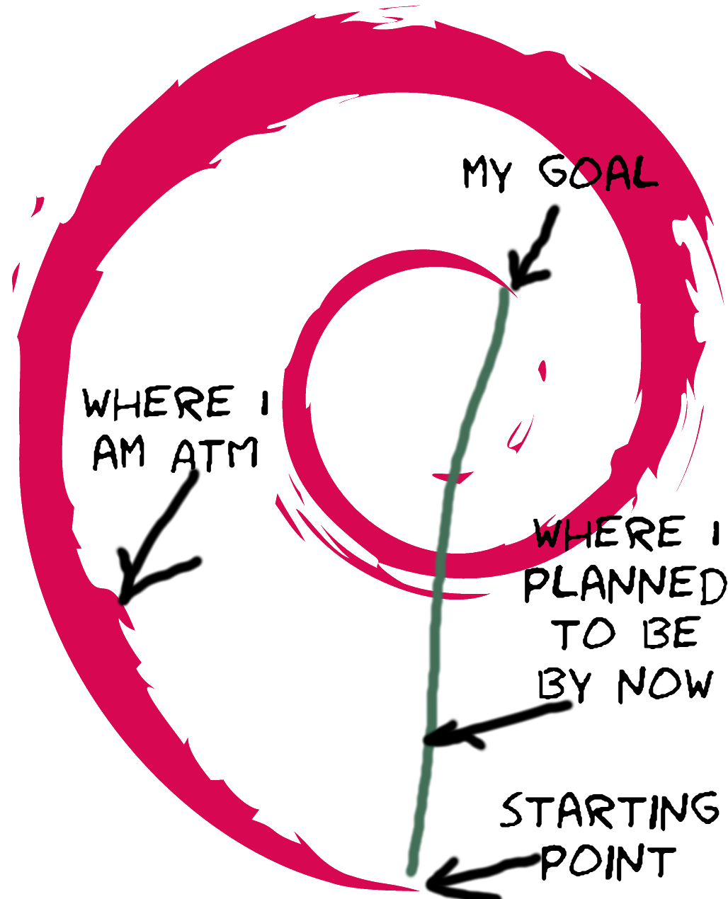

Unexpected Things When You’re Expecting¶
Hi everyone, I hope that you are all doing well and wishes you all good health! The last week has not been really kind to me with a decent amount of academic pressure (my school year is lasting until early Jully). It would be bold to say that I have spent 10 hours working on my GSoC project since the last check-in, let alone the 30 hours per week requirement. That being said, there were still some discoveries that I wish to share.
The multiprocessing[.dummy] wrapper¶
Most of the time I spent was to finalize the multi{processing,threading}
wrapper for map function that submit tasks to the worker pool.
To my surprise, it is rather difficult to write something that is
not only portable but also easy to read and test.
By the latest commit, I realized the following:
The
multiprocessingmodule was not designed for the implementation details to be abstracted away entirely. For example, the lazymap’s could be really slow without specifying suitable chunk size (to cut the input iterable and distribute them to workers in the pool). By suitable, I mean only an order smaller than the input. This defeats half of the purpose of making it lazy: allowing the input to be evaluated lazily. Luckily, in the use case I’m aiming for, the length of the iterable argument is small and the laziness is only needed for the output (to pipeline download and installation).Mocking
importfor testing purposes can never be pretty. One reason is that we (Python users) have very little control over the calls ofimportstatements and its lower-level implementation__import__. In order to properly patch this built-in function, unlike for others of the same group, we have tomonkeypatchthe name frombuiltins(or__builtins__under Python 2) instead of the module that import stuff. Furthermore, because of the special namespacing, to avoid infinite recursion we need to alias the function to a different name for fallback.To add to the problem,
multiprocessinglazily imports the fragile module during pools creation. Since the failure is platform-specific (the lack ofsem_open), it was decided to check upon the import of thepip’s module. Although the behavior is easier to reason in human language, testing it requires invalidating cached import and re-import the wrapper module.Last but not least, I now understand the pain of keeping Python 2 compatibility that many package maintainers still need to deal with everyday (although Python 2 has reached its end-of-life,
pip, for example, will still support it for another year).
The change in direction¶
Since last week, my mentor Pradyun Gedam and I set up weekly real-time meeting (a fancy term for video/audio chat in the worldwide quarantine era) for the entire GSoC period. During the last session, we decided to put parallelization of download during resolution on hold, in favor of a more beneficial goal: partially download the wheels during dependency resolution.
As discussed by Danny McClanahan and the maintainers of pip, it is feasible
to only download a few kB of a wheel to obtain enough metadata for
the resolution of dependency. While this is only applicable to wheels
(i.e. prebuilt packages), other packaging format only make up less than 20%
of the downloads (at least on PyPI), and the figure is much less for
the most popular packages. Therefore, this optimization alone could make
the upcoming backtracking resolver’s performance par with the legacy one.
During the last few years, there has been a lot of effort being poured into
replacing pip’s current resolver that is unable to resolve conflicts.
While its correctness will be ensured by some of the most talented and
hard-working developers in the Python packaging community, from the users’
point of view, it would be better to have its performance not lagging
behind the old one. Aside from the increase in CPU cycles for more
rigorous resolution, more I/O, especially networking operations is expected
to be performed. This is due to the lack of a standard and efficient way
to acquire the metadata. Therefore, unlike
most package managers we are familiar with, pip has to fetch
(and possibly build) the packages solely for dependency informations.
Fortunately, PEP 427#recommended-archiver-features recommends
package builders to place the metadata at the end of the archive.
This allows the resolver to only fetch the last few kB using
HTTP range requests for the relevant information.
Simply appending Range: bytes=-8000 to the request header
in pip._internal.network.download makes the resolution process
lightning fast. Of course this breaks the installation but I am confident
that it is not difficult to implement this optimization cleanly.
One drawback of this optimization is the compatibility. Not every Python package index support range requests, and it is not possible to verify the partial wheel. While the first case is unavoidable, for the other, hashes checking is usually used for pinned/locked-version requirements, thus no backtracking is done during dependency resolution.
Either way, before installation, the packages selected by the resolver can be downloaded in parallel. This warranties a larger crowd of packages, compared to parallelization during resolution, where the number of downloads can be as low as one during trail of different versions of the same package.
Unfortunately, I have not been able to do much other than a minor clean up. I am looking forward to accomplishing more this week and seeing what this path will lead us too! At the moment, I am happy that I’m able to meet the blog deadline, at least in UTC!